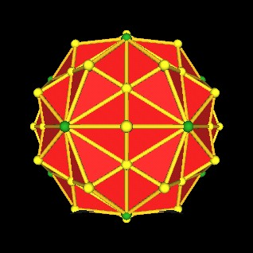
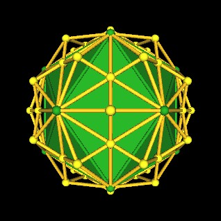
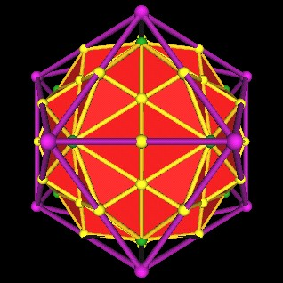
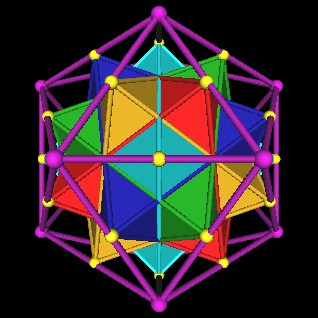
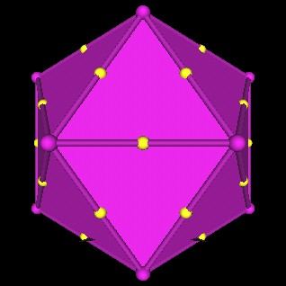
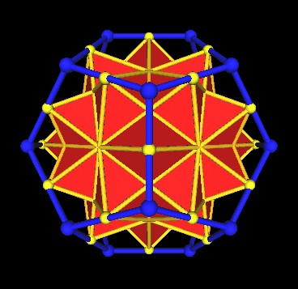
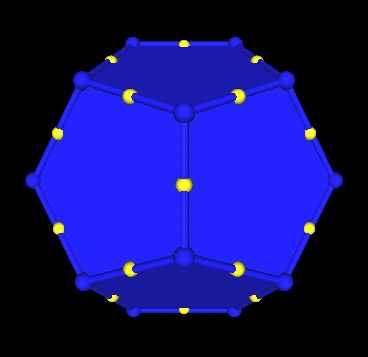
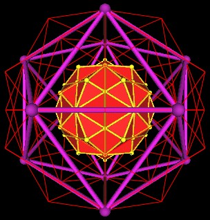
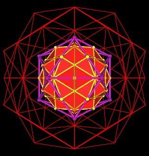

Recall the 120 Polyhedron. It has 62 vertices. The vertices of the 120 Polyhedron are the 12 vertices of an Icosahedron, 20 vertices of a regular Dodecahedron and 30 vertices of 5 Octahedra. (12+20+30=62)
|  |
| Vertices (green) of the Icosahedron which is part of the 120 Polyhedron construction. |
The Icosahedron is just one of many polyhedra defined within the 120 Polyhedron.
|  |
| The unscaled Icosahedron (green) which is part of the 120 Polyhedron construction. |
If we scale the Icosahedron, which is part of the 120 Polyhedron construction, by a factor of 1.25 (one-and-a-quater) we find that the mid-edge points of the scaled Icosahedron intersect with the 30 Octahedra vertices of the unscaled 120 Polyhedron.
|  |
| The Icosahedron scaled (purple) by 1 1/4 (5/4). |
Here are the 5 Octahedra of the unscaled 120 Polyhedron with the 1.25 scaled Icoahedron.
|  |
| The 5 Octahedra of the 120 Polyhedron. |
Here is another image showing the mid-edge points, vertices of the 5 Octahedra, of the scaled Icosahedron.
|  |
| The outer-most verticees of the 120 Polyhedron define mid-edge points of a surrounding Icosahedron. |
This correspondence of the scaled Icosahedron's mid-edge points with the vertices of the 5 octahedra also holds for the regular Dodecahedron.
Scaling the regular Dodecahedron (as it occurs in the 120 Polyhedron) by 1.25 results in its mid-edge points matching with the vertices of the 5 octahedra.
|  |
| Scaled regular Dodecahedron (blue) by a factor of 1.25. |
|  |
| Scaled regular Dodecahedron (blue) by a factor of 1.25. |
This is not surprising since the mid-edge points of the Icosahedron correspond with the mid-edge points of the regular Dodecahedron at the scale that these polyhedra occur in the 120 Polyhedron. (These points are also the face center points of the rhombic Triacontahedron.)
Now let us look at reducing the scale of the 120 Polyhedron and the Icosahedron.
Consider the orginal (unscaled) 120 Polyhedron (red lines) and its (unscaled) Icoahedron (purple).
Put a scaled copy of the 120 Polyhedron (yellow edges) within the original 120 Polyhedron. The scale factor is simply 1/2.
|  |
| The 120 Polyhedron scaled by 1/2 (yellow edges) inside the original unscaled 120 Polyhedron (red lines) with unscaled Icosahedron (purple). |
Next we scale the Icosahedron (purple) by a factor of 1/(Golden Ratio), which is approximately (0.618033989). We find that the scaled down Icosahedron's mid-edge points match the scaled down version of the 120 Polyhedron's outermost (Octahedra) vertices.
|  |
| The Icosahedron scaled by 1/(Golden Ratio). |
I find this scaling of the Icosahedron very interesting.
If you scale up the Icosahedron by 1.25, the mid-edge points match the outermost vertices of the unscaled 120 Polyhedron.
If you scale down the Icosahedron by 1/(Golden Ratio), the mid-edge points match the outermost vertices of the 1/2 scale 120 Polyhedron.
Usage Note: My work is copyrighted. You may use my work but you may not include my work, or parts of it, in any for-profit project without my consent.